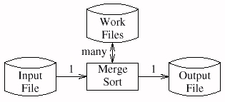
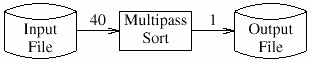

The obvious program uses a general disk-based Merge Sort as a starting point but trims it to exploit the fact that we are sorting integers. That reduces the two hundred lines of code by a few dozen lines, and also makes it run faster. It might still take a few days to get the code up and running.
A second solution makes even more use of the particular nature of this sorting problem. If we store each number in seven bytes, then we can store about 143,000 numbers in the available megabyte. If we represent each number as a 32-bit integer, though, then we can store 250,000 numbers in the megabyte. We will therefore use a program that makes 40 passes over the input file. On the first pass it reads into memory any integer between 0 and 249,999, sorts the (at most) 250,000 integers and writes them to the output file. The second pass sorts the integers from 250,000 to 499,999, and so on to the 40th pass, which sorts 9,750,000 to 9,999,999. A Quicksort would be quite efficient for the main-memory sorts, and it requires only twenty lines of code (as we'll see in Column 11). The entire program could therefore be implemented in a page or two of code. It also has the desirable property that we no longer have to worry about using intermediate disk files; unfortunately, for that benefit we pay the price of reading the entire input file 40 times.
A Merge Sort program reads the file once from the input,
sorts it with the aid of work files
that are read and written many times,
and then writes it once.

The 40-pass algorithm reads the input file many times
and writes the output just once,
using no intermediate files.

We would prefer the following scheme, which combines
the advantages of the previous two.
It reads the input just once,
and uses no intermediate files.

We can do this only if we represent all the integers
in the input file in the available megabyte of main memory.
Thus the problem boils down to whether we can
represent at most ten million distinct integers in
about
eight million available bits.
Think about an appropriate representation.
Next: Section 1.4. Implementation Sketch.
Copyright © 1999 Lucent Technologies. All rights reserved. Thu 23 Sep 1999